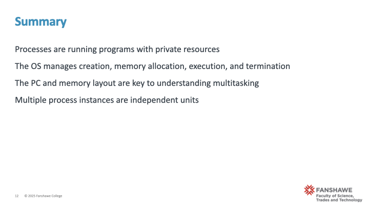

4 Processes and OS Management
5 Module 3: Understanding Processes and OS Management
5.1 🧠Module 3 Overview
**Narrative
This module introduces one of the foundational concepts in operating systems: the process. We explore how processes are created, managed, and isolated by the operating system. This is particularly important in embedded systems, where stability and predictability are critical.
🎞 Slide
Module 3 Overview - What is a process? - The OS role in process creation and management - Process memory space and protection - Process state and the Program Counter - Multiple instances of a process - Embedded relevance
🔄 Segue
Let’s begin by understanding what a process really is — and why it’s more than just a program.
5.2 What is a Process?
🧠Narrative
A process is an instance of a program in execution. While a program is a passive set of instructions (e.g., a compiled .exe or binary), a process is active. It includes: - A unique Process ID (PID) - Its own memory space - A Program Counter (PC) pointing to the next instruction - Associated resources like open files, scheduling information, and CPU registers
🎞 Slide - What is a Process?
What is a Process? - A running instance of a program - Unique PID, memory space, PC - Managed and isolated by the OS 🔄 Segue
Let’s now take a closer look at what the operating system actually does when you launch a process.
5.3 The Role of the Operating System
🧠Narrative
When you run a program, the OS: 1. Loads the executable into memory 2. Allocates a private memory space 3. Initializes the stack and heap 4. Sets the PC to the entry point 5. Schedules the process to run via the CPU
This allows the system to safely manage multiple processes running concurrently without interference.
🎞 Slide - The Role of the Operating System
The Role of the Operating System - Load and set up the program - Assign memory - Track with PCB and PC - Schedule to run
🔄 Segue
To make this real, let’s look at a simple C program that demonstrates how a new process is created.
5.4 Simple C program fork()
🧠Narrative
This simple C program uses fork() to duplicate the current process:
🎞 Slide - Simple C program fork()
#include <stdio.h>
#include <unistd.h>
int main() {
printf("Parent PID: %d\n", getpid());
fork();
printf("Hello from PID: %d\n", getpid());
return 0;
}This program shows that each process, while sharing code, executes independently.
🔄 Segue
But how does each process keep track of where it is and what memory it’s using? Let’s look at memory layout.
5.5 Process Memory Layout
🧠Narrative
Each process has a well-defined layout: - Text segment: Executable code - Data segment: Initialized global/static variables - BSS: Uninitialized globals/statics - Heap: Grows up with malloc() - Stack: Grows down with function calls
In embedded systems, managing this layout carefully is crucial to avoid overflow or unpredictable behavior.
🎞 Slide - Process Memory Layout Process Memory Layout - Text, Data, BSS, Heap, Stack - Visually organized top-to-bottom
🔄 Segue
We’ve said each process is isolated. How is that enforced? Let’s look at memory protection.
5.6 Memory Protection
🧠Narrative
Memory protection ensures stability: - One process cannot access another’s memory - Uses MMU (Memory Management Unit) - Violations cause segmentation faults
This is critical in embedded systems where shared resources could lead to system crashes.
🎞 Slide - Memory Protection Memory Protection - Prevents interference - MMU-enforced - Segfaults signal boundary violations
🔄 Segue
Now that we’ve covered structure and safety, let’s explore how processes move through their lifecycle.
5.7 Process State Model
🧠Narrative
A process transitions through several states: - New → Ready → Running → Blocked → Exit
The OS keeps track using a Process Control Block (PCB) that holds: - PID - PC - State - Memory pointers
🎞 Slide - Process State Model Process State Model - Visual state diagram - PCB components listed
🔄 Segue
All of this is possible because the Program Counter tells the CPU what to do next. Let’s focus on that next.
5.8 The Program Counter (PC)
🧠Narrative
The Program Counter (PC) tracks which instruction to execute: - Saved/restored during context switching - Enables multitasking
Think of it like a bookmark in a book — each process has its own.
🎞 Slide - The Program Counter (PC) The Program Counter (PC) - Tracks execution - Saved during switches - Book analogy
🔄 Segue
Now, let’s examine how the system handles running multiple processes of the same program.
5.9 Multiple Instances of a Process
🧠Narrative
It’s common to run multiple instances of the same program:
$ sleep 60 &
$ sleep 60 &
$ ps aux | grep sleepEach one is isolated and scheduled independently.
🎞 Slide - Multiple Instances of a Process Multiple Instances of a Process - Same binary, different state - Unique PID and memory
🔄 Segue
This is essential in embedded contexts where multiple services run in parallel — each safely managed.
5.10 Embedded Context
🧠Narrative
In embedded systems: - Resource constraints are stricter - Real-time response is critical - Static allocation is preferred
But the concept of isolated, predictable process execution remains vital.
🎞 Slide - Embedded Context Embedded Context - Fewer processes, stricter rules - Isolation protects critical operations
🔄 Segue
Let’s test our understanding with a short exercise.
5.10.1 Checkpoint Exercise
🧠Narrative
Checkpoint Exercise: Write a C program that: 1. Forks two child processes 2. Prints each PID and memory address of a local variable 3. Observe how address spaces differ
🎞 Slide - Checkpoint Exercise
Checkpoint Exercise - Fork + observe memory - Compare address outputs
🔄 Segue
Let’s wrap up with key takeaways from this module.
5.10.2 Summary
🧠Narrative
- Processes are the building blocks of multitasking
- OS handles memory and execution state
- Each process is isolated and independently managed
- The PC, memory layout, and state tracking are key OS responsibilities
🎞 Slide - Summary
Summary - Key responsibilities of OS - Memory and execution isolation - Embedded considerations

🔄 Segue
Next time, we’ll explore how the OS juggles processes using scheduling.
5.10.3 Coming Next
🧠Narrative
We’ll cover scheduling algorithms and how the OS decides which process runs next — including real-time scheduling in embedded systems.
🎞 Slide - Coming Next Coming Next - Context switching - Scheduling strategies ————————————————————————
This content is designed to accompany the Module03_slidedeck.qmd and prepare students for lab exercises and embedded applications.